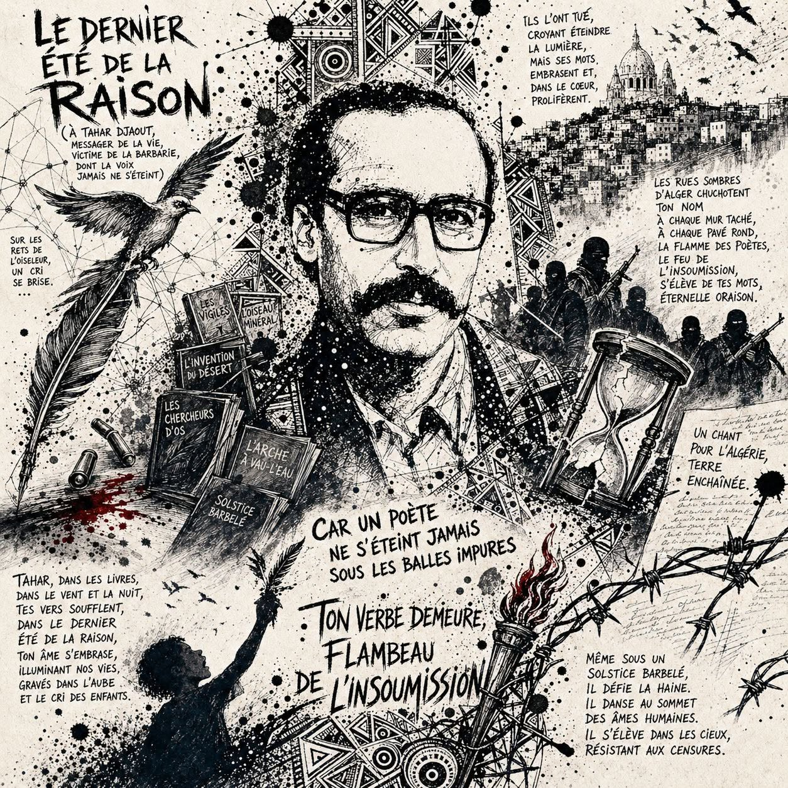

Le dernier été de la raison
(À Tahar Djaout, messager de la vie, victime de la barbarie, dont la voix jamais ne s’éteint)
À l’aube blafarde
où les mots se taisent,
Sur les rets de l’oiseleur,
un cri se brise.
Des balles tirées
par les vigiles de la foutaise,
Un poète tombe
dans les rues grises.
Foudroyée,
sa plume arrachée
à l’oiseau minéral,
Ornée de flammes,
s’élève et s’emballe.
Son encre palpite,
son rêve s’indigne,
Son combat lancé,
le poète persiste
et signe.
Son absence s’écrit
en lettres de feu,
Dans l’étreinte du sablier,
un destin silencieux.
Tahar tu t’en est allé,
ton souffle témoigne.
L’Algérie pleure,
l’exproprié s’éloigne.
Le courage étouffé,
les idées qu'on résiste.
Les songes bâillonnés de regret,
se désistent.
L’homme qui écrivait
et tissait l’espoir de lumière,
Sous la peur assassine
est devenu poussière.
Il gît sous la nuit,
frappé par la guerre.
Mais nul ne peut détruire
un chant qui témoigne :
Que cherchent,
les chercheurs d’os,
dans la terre,
Les cicatrices d’un peuple
ou les espoirs qui soignent ?
Ses mots dressaient
une arche à vau-l’eau,
Contre l’invention du désert,
contre l’écho du bourreau.
Contre le feu des douleurs,
le poids des prisons,
Les âmes perdues,
les cœurs en tisons.
Sous sa plume vive,
le feu de la révolte déchainée,
Incendiaire flambeau d’un destin,
Dévoilait l’ombre
et traçait demain.
Un chant pour l’Algérie,
terre enchaînée.
Ils l’ont tué,
croyant éteindre la lumière,
Ils ont cru étouffer l’écho
d’une voix vibrante.
Mais ses mots embrasent et,
dans le cœur,
prolifèrent.
Il demeure brillant
comme une étoile éclatante.
Car un poète ne s’éteint jamais,
sous les balles impures,
Il s’élève dans les cieux,
résistant aux censures.
Il danse au sommet
des âmes humaines.
Même sous un solstice barbelé,
il défie la haine.
Tahar,
dans les livres,
dans le vent
et la nuit,
Tes vers soufflent,
dans le dernier été de la raison,
Ton âme s’embrase,
illuminant nos vies.
Gravés dans l’aube
et le cri des enfants.
Tes vers résonnent
à chaque saison.
Et malgré les ombres
qui croient te faire taire,
Ton combat est notre crédo,
ta voix est notre air.
Ton verbe demeure,
flambeau de l’insoumission.
Les rues sombres d’Alger
chuchotent ton nom,
À chaque mur taché,
à chaque pavé rond,
La flamme des poètes,
le feu de l’insoumission,
S’élève de tes mots,
éternelle oraison.
Djamel Metref
At Yenni le 26 Mai 2024

← Tous les poèmes